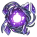
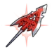

| Nome | Dan Heng |
|---|---|
| Elemento | Vento | Raridade | ✦ ✦ ✦ ✦ |
| Caminho | A Caça |
| Sexo | Homem |
| Especie | Humano |
| Facção | Expresso Astral e O sem-nome | Mundo | Expresso Astral | Como obter | Olho da Tempestade e Qualquer Banner Warp | Data de Lançamento | 2023-04-26 | Adicionado pela primeira vez | Versão 0.6.0 |
Ascensões e estatísticas
| Fase de Ascensão | Level | Base HP | Base ATK | Base DEF | Base SPD |
|---|---|---|---|---|---|
| 0✦ | 1/20 | 120 | 74 | 54 | 110 |
| 20/20 | 234 | 145 | 105 | 110 | |
| 1✦ | 20/30 | 282 | 174 | 126 | 110 |
| 30/30 | 342 | 212 | 153 | 110 | |
| 2✦ | 30/40 | 390 | 241 | 175 | 110 |
| 40/40 | 450 | 279 | 202 | 110 | |
| 3✦ | 40/50 | 498 | 308 | 224 | 110 |
| 50/50 | 558 | 345 | 251 | 110 | |
| 4✦ | 50/60 | 606 | 375 | 272 | 110 |
| 60/60 | 666 | 412 | 299 | 110 | |
| 5✦ | 60/70 | 714 | 442 | 321 | 110 |
| 70/70 | 774 | 479 | 348 | 110 | |
| 6✦ | 70/80 | 822 | 509 | 369 | 110 |
| 80/80 | 882 | 546 | 396 | 110 |
| Nível | Custo de Evolução | Materiais de Ascensão do Personagem | Materiais Necessários |
|---|---|---|---|
| 0 → 1 ✦ |  3,200 3,200 |
4 | |
| 1 → 2 ✦ | 6,400 |
8 | |
| 2 → 3 ✦ | 12,800 |
2 |  5 5 |
| 3 → 4 ✦ | 32,000 |
5 | 8 |
| 4 → 5 ✦ | 64,400 |
15 | 5 |
| 5 → 6 ✦ | 128,000 |
28 | 7 |
Habilidades de combate
| Icone | Tipo | Nome | Descrição | Marcação | Energia | Resistência DMG |
|---|---|---|---|---|---|---|
 |
ATK básico | Arte Cloudlancer: Vento Norte | Causa Wind DMG igual a 50%–130% do ATK de Dan Heng a um único inimigo. | Alvo único | Geração: 20 | 30 |
 |
Skill | Arte Cloudlancer: Torrent | Causa Wind DMG igual a 130%–325% do ATK de Dan Heng a um único inimigo. Em um acerto CRIT, há uma chance básica de 100% de reduzir a SPD do alvo em 12% por 2 turno(s). | Alvo único | Geração: 30 | 60 |
 |
Ultimate | Sonho Etéreo | Causa Wind DMG igual a 240%–480% do ATK de Dan Heng a um único inimigo. Se o inimigo for retardado, o multiplicador DMG do Ultimate aumenta em 72%–144% . | Alvo único | Custo: 110 Geração: 5 | 90 |
 |
Talento | Superioridade de Alcance | Quando Dan Heng é o alvo da habilidade de um aliado, o Wind RES PEN de seu próximo ataque aumenta em 18%–45% . Este efeito pode ser acionado novamente após 2 turno(s). | Melhorar | ||
 |
Técnica | Ponta de Lança Dividida | Depois que Dan Heng usa sua técnica, seu ATK aumenta em 40% no início da próxima batalha por 3 turno(s). | Melhorar |
Eidolons
| Icone | Nome da habilidade | Nivel | Descrição |
|---|---|---|---|
 |
Quanto mais alto você voa, maior é a queda | 1 | Quando a porcentagem de HP atual do inimigo alvo é maior ou igual a 50%, a taxa CRIT aumenta em 12%. |
 |
Suprima o Venom Octet, Extinga o Vice O'Flame | 2 | Reduz o cooldown do talento em 1 turno. |
 |
Visto e não visto | 3 | Habilidade Nv. +2, até um máximo de Lv. 15. ATK Básico Lv. +1, até um máximo de Lv. 10. |
 |
Dragão Rugindo e Sol Nascente | 4 | Quando Dan Heng usa seu Ultimate para derrotar um inimigo, sua próxima ação é Avançar em 100%. |
 |
Uma gota de chuva alimenta uma torrente | 5 | Nível final +2, até um máximo de Lv. 15. Talento Nv. +2, até um máximo de Lv. 15. |
 |
A alma perturbada está à espreita | 6 | O estado lento desencadeado por Skill reduz o SPD do inimigo em 8%. |
Traços
| Custo Total (1 → 6 para rastreamento de ATK básico) | ||||||
|---|---|---|---|---|---|---|
| 192.000 |
4 | 5 |
5 | 6 |
| Custo total (1 → 10 para um rastreamento) | ||||||||
|---|---|---|---|---|---|---|---|---|
| 522.000 |
6 | 10 |
5 | 12 | .webp) 3 3 |
 1 1 |